أسئلة امتحانات الثانوية العامة (الفرع العلمي) من 2017 إلى 2025 مصنفة على هذا الفصل: 32 سؤال اختيار من متعدد و29 سؤال مقالي ومسألة. اضغط على خيار لترى إن كان صحيحاً مع الشرح، وحاول حل المسائل قبل ما تفتح الإجابة.
ملف دائري نصف قطره $(r)$ وعدد لفاته $(N)$ ويمر به تيار كهربائي $(I)$ إذا سحب من طرفيه باتجاه عمودي على سطحه بحيث أصبح ملفاً حلزونياً، ما طول الملف الحلزوني بدلالة $(r)$ اللازم لجعل شدة المجال المغناطيسي على محوره بعيداً عن الأطراف مساوياً نصف شدة المجال المغناطيسي عند مركز الملف الدائري؟
في الشكل المجاور سلكان متوازيان لا نهائيان في الطول وفي مستوى الصفحة، إذا انعدمت شدة المجال المغناطيسي الناتجة عن تياريهما عند النقطة $x$ فإن $I_2$ تساوي:
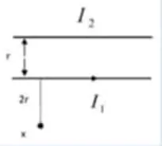
النقطة $x$ خارج السلكين، بُعدها $2r$ عن $I_1$ و $3r$ عن $I_2$. ينعدم المجال خارج السلكين فقط إذا كان التياران متعاكسين: $\dfrac{I_2}{3r}=\dfrac{I_1}{2r}$ ⇐ $I_2=\frac32I_1$
32022 د1 صناعي
في الشكل المجاور، سلك لا نهائي الطول يمر به تيار شدته $\mathrm{(15A)}$ وينطبق على محور ملف حلزوني عدد لفاته $\left(\frac{100\ لفة}{m}\right)$ ويمر به تيار شدته $\left(\frac1\pi\,\mathrm{A}\right)$، فما قيمة شدة المجال المغناطيسي بوحدة (تسلا) عند النقطة $(a)$؟
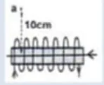
النقطة $a$ خارج الملف الحلزوني فمجاله عندها مهمل، ويبقى مجال السلك: $B=\dfrac{\mu_0I}{2\pi d}=\dfrac{2\times10^{-7}\times15}{0.1}=3\times10^{-5}\,\mathrm{T}$
42021 د2 علمي
سلك مستقيم لف على شكل ملف دائري لفة واحدة، ومر به تيار كهربائي، إذا لف السلك نفسه على شكل ملف دائري أربع لفات، ومر به نفس التيار، فما النسبة بين شدة المجال المغناطيسي عند مركز الملف الأول $(B_1)$ إلى شدة المجال المغناطيسي $(B_2)$ عند مركز الملف الثاني $(B_1/B_2)$؟
أربع لفات ⇐ نصف القطر يقل للربع وعدد اللفات يزيد 4 مرات ⇐ $B_2=16B_1$
52021 د1 علمي
في الشكل المجاور ملف دائري وسلك لا نهائي الطول يحمل تيار شدته $9$ أضعاف تيار الملف الدائري، ما عدد لفات الملف الدائري بحيث ينعدم المجال المغناطيسي عند مركزه؟
في الشكل المجاور ملف دائري يكاد يمس سلك لا نهائي الطول يحمل تيار شدته $4$ أضعاف تيار الملف الدائري ما عدد لفات الملف الدائري بحيث ينعدم المجال المغناطيسي عند مركزه؟
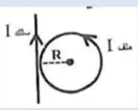
بُعد السلك عن المركز $R$: $\dfrac{\mu_0NI}{2R}=\dfrac{\mu_0(4I)}{2\pi R}$ ⇐ $N=\dfrac4\pi$
72021 د2 صناعي
لديك أربع أسلاك طويلة ومتقاطعة ومغلفة بمادة عازلة، وضعت لتشكل معاً مربع فإذا كان كلاً منها يحمل نفس التيار الكهربائي، أي المربعات الآتية ينعدم المجال المغناطيسي في مركزه؟
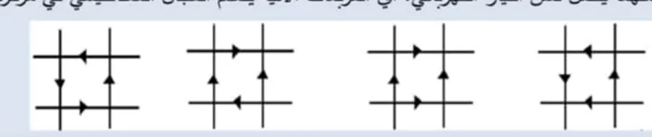
ينعدم المجال في المركز عندما يُلغي مجال كل سلكين متقابلين أحدهما الآخر، أي عندما يكون التياران في كل زوج متقابل بنفس الاتجاه.
82017 د1
يقل المجال المغناطيسي داخل ملف حلزوني يمر فيه تيار كهربائي عند:
$B=\dfrac{\mu_0NI}{L}$
92017 د1
ملف دائري نصف قطره $(r)$ وعدد لفاته $(N)$ ويمر به تيار كهربائي $(I)$ إذا سحب من طرفيه باتجاه عمودي على سطحه بحيث أصبح ملفاً حلزونياً، ما طول الملف الحلزوني بدلالة $(r)$ اللازم لجعل شدة المجال المغناطيسي على محوره بعيداً عن الأطراف مساوياً نصف شدة المجال المغناطيسي عند مركز الملف الدائري؟
ملف حلزوني يمر به تيار كهربائي مستمر فيحدث مجالاً مغناطيسياً شدته عند نقطة وسط هذا الملف على محوره تساوي $(B)$ تسلا، إذا ضغط الملف بحيث أصبح طوله نصف ما كان عليه مع بقاء عدد لفاته ثابتاً، فإن المجال بالتسلا عند هذه النقطة تساوي:
$B\propto\dfrac1L$
122017 د3
لزيادة شدة المجال المغناطيسي في مركز ملف دائري فإننا نقوم ب:
$B=\dfrac{\mu_0NI}{2r}$
132017 د3
الشكل المجاور يبين سلك مستقيم لا نهائي الطول يسري فيه تيار كهربائي في الاتجاه المبين، في أي نقطة من النقاط الموجودة حول السلك تكون شدة المجال المغناطيسي أكبر ما يمكن وباتجاه المحور الزيني السالب $(-Z)$؟
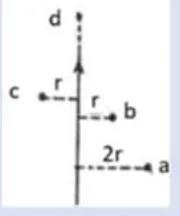
يمين السلك يكون المجال داخلاً في الصفحة $(-Z)$ حسب قاعدة اليد اليمنى، و $b$ هي الأقرب $(r)$ فمجالها الأكبر. (النقطة $c$ مجالها خارج من الصفحة، و $d$ على امتداد السلك مجالها صفر.)
142018 د1
ملف دائري نصف قطره $(r)$ وعدد لفاته $(N)$ يتولد عند مركزه مجال مغناطيسي شدته $\mathrm{(1.2\,T)}$ عندما يمر به تيار شدته $(I)$ وعند مضاعفة نصف قطره مع بقاء عدد اللفات وشدة التيار ثابتة وتكون شدة المجال المغناطيسي المتولدة بوحدة تسلا هي:
$B\propto\dfrac1r$
152018 د2
ملف دائري نصف قطره $\mathrm{(10\,cm)}$ وعدد لفاته $(50$ لفة$)$ مر به تيار شدته $2$ أمبير تكون شدة المجال في مركزه بوحدة تسلا؟
في الشكل المجاور سلك مستقيم لا نهائي الطول، يحمل تياراً كهربائياً شدته $\mathrm{(2A)}$ نحو محور $(+Y)$ وضعت حلقة دائرية في مستوى السلك، نصف قطرها $(\pi\,\mathrm{cm)}$ يقع مركزها على بعد $\mathrm{(4\,cm)}$ من السلك، ما مقدار واتجاه شدة التيار المار بالحلقة حتى ينعدم المجال المغناطيسي في مركز الحلقة؟
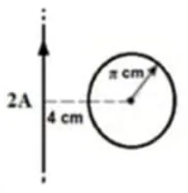
مجال السلك: $\dfrac{2\times10^{-7}\times2}{0.04}=10^{-5}\,\mathrm{T}$ داخل الصفحة $\dfrac{\mu_0I}{2r}=10^{-5}$ ⇐ $I=\dfrac{10^{-5}\times2\pi\times10^{-2}}{4\pi\times10^{-7}}=0.5\,\mathrm{A}$، ويجب أن يكون مجال الحلقة خارجاً من الصفحة ⇐ عكس عقارب الساعة.
172019 د1
ملف حلزوني متصل ببطارية ومقاومة على التوالي، أي الآتية تؤدي إلى مضاعفة في شدة المجال المغناطيسي داخل الملف الحلزوني؟
مضاعفة $\varepsilon$ تضاعف التيار، و $B=\dfrac{\mu_0NI}{L}$
182019 د2
ملفان دائريان متحدان في المركز عدد لفات كل منهما $(N)$ لفة، وموضوعان في مستوى الصفحة، الأول نصف قطره $(R)$، وشدة التيار المار فيه $(I)$ أمبير وباتجاه عقارب الساعة، ما مقدار شدة التيار الكهربائي واتجاهه في الملف الثاني والذي نصف قطره $(2R)$ حتى ينعدم المجال المغناطيسي الكلي عند المركز المشترك بينهما؟
الشكل المجاور بين سلكين لا نهائيين يسري في كل منهما تيار كهربائي شدته $\mathrm{(2A)}$ بعيداً عن الناظر، والمسافة بينهما $\mathrm{(4\,cm)}$ في الهواء ما مقدار شدة المجال المغناطيسي في النقطة $(a)$ التي تقع في منتصف المسافة بينهما؟
يبين الشكل المجاور سلكين لا نهائيين يسري في كل منهما تيار كهربائي شدته $\mathrm{(4A)}$ نحو الناظر والمسافة بينهما $\mathrm{(2\,cm)}$ في الهواء. ما شدة المجال المغناطيسي في النقطة $(a)$ التي تبعد عن السلك الثاني مسافة $\mathrm{(2\,cm)}$ بوحدة (تسلا)؟
$B=\dfrac{2\times10^{-7}\times4}{0.02}+\dfrac{2\times10^{-7}\times4}{0.04}=4\times10^{-5}+2\times10^{-5}=6\times10^{-5}\,\mathrm{T}$، والمجالان بنفس الاتجاه $(+y)$ لأن التيارين نحو الناظر والنقطة على يمينهما.
212020 د1
سلك معدني طوله $(L)$ متر على شكل حلقة معدنية بلفة واحدة، مر فيها تيار كهربائي شدته $(I)$ أمبير فكانت شدة المجال المغناطيسي في مركزها $(B)$ إذا لف نفس السلك لتكوين ملف دائري عدد لفاته لفتان، ومر فيها نفس شدة التيار الكهربائي، فما شدة المجال المغناطيسي المتولد في مركزه؟
لفتان ⇐ نصف القطر يقل للنصف وعدد اللفات يتضاعف ⇐ $B'=\dfrac{2}{1/2}B=4B$
222020 د2
ملف حلزوني يمر فيه تيار كهربائي، تم تقسيمه إلى جزئين بنسبة طولية $(3:2)$، ما شدة المجال المغناطيسي $(B_1:B_2)$ على محوريهما؟
عدد اللفات لكل وحدة طول $\left(\dfrac NL\right)$ لا يتغير بالتقسيم، فالمجال متساوٍ.
232020 د3
أي الآتية يمثل اتجاه المجال المغناطيسي الناتج عن مرور تيار كهربائي شدته $(I)$ في موصل طول الجزء منه $(\Delta L)$ عند نقطة تبعد عنه مسافة $(\vec r)$؟
قانون بيو–سافار: $\Delta\vec B\propto\vec{\Delta L}\times\vec r$ فيكون عمودياً على كليهما.
242020 د3
أي الآتية يسبب زيادة شدة المجال المغناطيسي داخل ملف حلزوني يمر به تيار كهربائي مع ثبوت العوامل الأخرى؟
نقصان المقاومة يزيد التيار، و $B=\dfrac{\mu_0NI}{L}$
252023 د1
سلك فلزي طوله $(L)$ متر على شكل حلقة فلزية بلفة واحدة، مرّ فيها تيار كهربائي شدته $\mathrm{(1\,A)}$، فكانت شدة المجال المغناطيسي في مركزها $(B)$. إذا لُفّ نفس السلك لتكوين ملف دائري عدد لفاته $(N)$ لفة ومرّ فيه نفس شدة التيار الكهربائي، فأصبحت شدة المجال المغناطيسي في مركزه $(4B)$، فما عدد لفات الملف الدائري $(N)$؟
يمثل الشكل المجاور سلكاً يسري فيه تيار كهربائي شدته $\left(\frac9\pi\,\mathrm{A}\right)$ في الاتجاه المبين، ما مقدار واتجاه شدة المجال المغناطيسي عند النقطة $(C)$ المبينة في الشكل؟
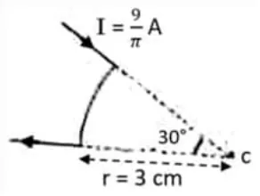
الجزءان المستقيمان على امتداد $C$ فمجالهما صفر. القوس $30^\circ=\frac\pi6$: $B=\dfrac{\mu_0I\theta}{4\pi r}=\dfrac{10^{-7}\times\frac9\pi\times\frac\pi6}{0.03}=0.5\times10^{-5}\,\mathrm{T}$، واتجاهه $(+Z)$ حسب اتجاه التيار في القوس.
272023 استكمالية
ملف حلزوني يمر فيه تيار كهربائي، تمّ تقسيمه إلى جزأين بنسبة طولية $(1:2)$، ما شدة المجال $(B_2:B_1)$ على محوريهما؟
عدد اللفات لوحدة الطول لا يتغير.
282024 د2
الشكل المجاور يبين سلكين مستقيمين لا نهائي الطول ومتوازيين، ويحملان تيارين كهربائيين متعاكسين، ما مقدار شدة التيار الكهربائي $(I_2)$ بوحدة الأمبير والذي يجعل محصلة شدة المجال المغناطيسي في النقطة $(a)$ تساوي صفراً؟
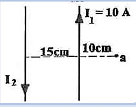
النقطة $a$ على بعد $\mathrm{10\,cm}$ من $I_1$ و $\mathrm{25\,cm}$ من $I_2$: $\dfrac{10}{0.1}=\dfrac{I_2}{0.25}$ ⇐ $I_2=25\,\mathrm{A}$
292024 استكمالية
سلكان مستقيمان طويلان جداً ومتوازيان وضعا بشكل متعامد على مستوى الصفحة وعلى بعد $\mathrm{(10\,cm)}$ من بعضهما، فإذا مرّ بهما تياران متساويان مقدار كل منهما $\mathrm{(4\,A)}$، ما مقدار واتجاه شدة المجال المغناطيسي الناشئ عنهما عند منتصف المسافة بينهما؟
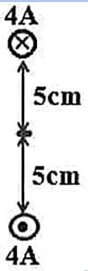
التياران متعاكسان فيتجمع المجالان في المنتصف: $2\times\dfrac{2\times10^{-7}\times4}{0.05}=3.2\times10^{-5}\,\mathrm{T}$ باتجاه $-X$ (قاعدة اليد اليمنى).
302025 د1
ملف حلزوني طوله $\mathrm{30\,cm}$ ونصف قطره $\mathrm{3\,cm}$ وينتج مجال مغناطيسي شدته $(B)$ فإذا ضغط الملف ليصبح ملف دائري فإن شدة المجال المغناطيسي عند المركز تصبح:
أي الأشكال الآتية تكون شدة المجال المغناطيسي $(\Delta B)$ الناشئ عن العنصر من الموصل $(\Delta L)$ الذي يسري فيه تيار كهربائي كما هو مبين في الأشكال عند النقطة $a$ هي الأعلى؟
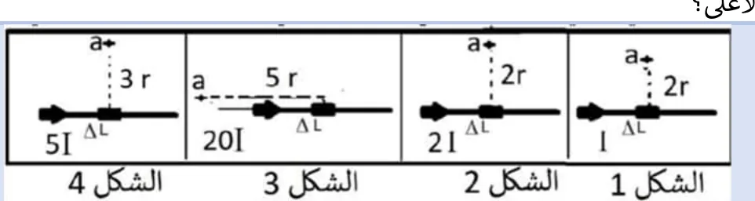
$\Delta B\propto\dfrac{I\Delta L\sin\theta}{r^2}$: الشكل 4: $\dfrac{5I}{9r^2}\approx0.56\dfrac{I}{r^2}$، الشكل 2: $\dfrac{2I}{4r^2}=0.5$، الشكل 3: النقطة على امتداد العنصر $(\sin0=0)$، الشكل 1: أقل.
322025 د2
يبين الشكل سلكين طويلين جداً متوازيين يحملان تيارين كهربائيين $(I_1,I_2)$، المسافة بينهما تساوي $(D)$ فإذا انعدمت شدة المجال المغناطيسي عند النقطة $(p)$ التي تبعد مسافة $\left(\frac D3\right)$ عن السلك الأول، فما مقدار واتجاه التيار $(I_2)$ في السلك الثاني؟
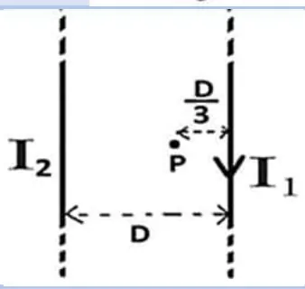
النقطة بين السلكين فيجب أن يكون التياران بنفس الاتجاه (لأسفل): $\dfrac{I_1}{D/3}=\dfrac{I_2}{2D/3}$ ⇐ $I_2=2I_1$
السؤال الثاني (أ): ما المقصود بـ
12022 د1 صناعي
كثافة خطوط المجال المغناطيسي
أظهر الإجابة
عدد خطوط المجال المغناطيسي التي تمر عمودياً عبر وحدة المساحة، وتزداد كلما اقتربنا من أحد أقطاب المغناطيس، وتدل على شدة المجال.
22021 و2023 و2024 و2025
اكتب نص قانون أمبير والصيغة الرياضية له.
أظهر الإجابة
لأي مسار مغلق يكون مجموع حاصل الضرب النقطي لشدة المجال المغناطيسي مع طول ذلك الجزء من المسار المغلق مساوياً للمجموع الجبري للتيارات التي تخترق المسار المغلق مضروباً في ثابت نفاذية الفراغ: $\Sigma B\cdot\Delta L=\mu_0\Sigma I_{in}$
32023
خط المجال المغناطيسي
أظهر الإجابة
خط وهمي له اتجاه، يُعبّر عن المسار الذي يتبعه القطب الشمالي الافتراضي المفرد حر الحركة تحت تأثير القوة المغناطيسية المؤثرة فيه عندما يوضع في المجال المغناطيسي، والمماس له عند أي نقطة يحدد اتجاه المجال.
42023 د2 و2024
المجال المغناطيسي
أظهر الإجابة
المنطقة المحيطة بالمغناطيس (أو بالموصل الذي يمر فيه تيار) والتي تظهر فيها آثار قوته المغناطيسية.
السؤال الثاني (ب): علّل لما يلي
12022 د1 علمي و2024
لا يستخدم قانون أمبير لاشتقاق المجال المغناطيسي في مركز ملف دائري.
أظهر الإجابة
لأن المجال المغناطيسي حول الملف الدائري ليس ثابتاً في المقدار على أي مسار مغلق يمكن اختياره، ولا يوجد تماثل يسمح بإخراج $B$ من المجموع.
22021 و2025
خطوط المجال المغناطيسي لا تتقاطع.
أظهر الإجابة
لأنها لو تقاطعت لكان للمجال عند نقطة التقاطع اتجاهان، وهذا مستحيل لأن للمجال عند أي نقطة اتجاهاً واحداً فقط.
32021 د2
شدة المجال المغناطيسي خارج الملف الحلزوني صغيرة جداً مقارنة بشدة المجال بداخله.
أظهر الإجابة
لأن خطوط المجال خارج الملف تنتشر في حيز كبير جداً فتكون كثافتها قليلة، بينما تتركز داخل الملف في حيز صغير.
42017 و2019
خطوط المجال المغناطيسية مقفلة.
أظهر الإجابة
لأنه لا توجد أقطاب مغناطيسية منفردة؛ فالخطوط تخرج من القطب الشمالي وتدخل في القطب الجنوبي خارج المغناطيس، وتكمل مسارها من الجنوبي إلى الشمالي داخله.
52023 د1
شدة المجال المغناطيسي عند أي نقطة على امتداد سلك طويل يحمل تياراً كهربائياً يساوي صفراً.
أظهر الإجابة
لأن الزاوية بين عنصر التيار $\Delta L$ ومتجه الموقع $r$ تساوي صفراً، ف $\sin0=0$ حسب قانون بيو–سافار.
62023 د2
يستخدم قانون أمبير لإيجاد شدة المجال المغناطيسي لملف حلزوني يسري فيه تيار كهربائي.
أظهر الإجابة
لأن المجال داخل الملف الحلزوني منتظم وموازٍ لمحوره، ويمكن اختيار مسار مستطيل يكون فيه $B$ ثابتاً على الضلع الداخلي ومهملاً خارج الملف وعمودياً على الضلعين الآخرين.
السؤال الثاني (ج): قارن
1—
قارن بين شكل خطوط المجال المغناطيسي الناشئ من سلك طويل يحمل تياراً كهربائياً، وشكل خطوط المجال المغناطيسي عند مركز ملف دائري يحمل تياراً كهربائياً.
أظهر الإجابة
السلك الطويل: دوائر متحدة المركز حول السلك في مستوى عمودي عليه. مركز الملف الدائري: خطوط مستقيمة تقريباً عمودية على مستوى الملف.
السؤال الثالث: المسائل الحسابية
12022 د1 علمي
سلك موصل طوله $(10\pi\,\mathrm{cm)}$ شُكّل بحيث يصنع منه ملف دائري نصف قطره $(R)$ وعدد لفاته $(N)$، مُرّر به تيار شدته $\mathrm{(5\,A)}$ فتولد في مركزه مجال مغناطيسي شدته $(2\pi\times10^{-4}\,\mathrm{T)}$، أحسب: (1) نصف قطر الملف $(R)$ (2) عدد لفاته $(N)$
أظهر الإجابة
طول السلك $=N(2\pi R)$ ⇐ $NR=0.05$ $B=\dfrac{\mu_0NI}{2R}$ ⇐ $\dfrac NR=\dfrac{2\pi\times10^{-4}\times2}{4\pi\times10^{-7}\times5}=200$ بضرب المعادلتين: $N^2=10$ ⇐ $N\approx3.2$ لفة، و $R=\dfrac{0.05}{N}\approx1.6\,\mathrm{cm}$ ملاحظة: مفتاح الإجابة يذكر $N=50$ و $R=0.1\,\mathrm{m}$، وهذه القيم لا تحقق معطيات السؤال (تعطي $B=5\pi\times10^{-4}\,\mathrm{T}$ وطول سلك $10\pi\,\mathrm{m}$)؛ يبدو أن في نص السؤال خطأً مطبعياً. المهم هو طريقة الحل: معادلة الطول + معادلة المجال.
22022 د1 صناعي
اعتماداً على الشكل المجاور، أثبت أن شدة المجال المغناطيسي عند النقطة $(a)$ تعطى بالعلاقة: $B=\dfrac{\mu I}{12}\left(\dfrac1{R_1}-\dfrac1{R_2}\right)$
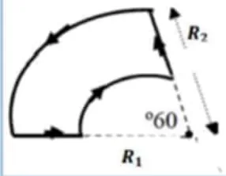
أظهر الإجابة
الأجزاء المستقيمة على امتداد $a$ فمجالها صفر. كل قوس يمثل $\dfrac{60}{360}=\dfrac16$ لفة: القوس الصغير: $B_1=\dfrac{\mu I(1/6)}{2R_1}=\dfrac{\mu I}{12R_1}$ (داخل الصفحة) القوس الكبير: $B_2=\dfrac{\mu I}{12R_2}$ (خارج الصفحة؛ التيار فيه بالاتجاه المعاكس) $B=B_1-B_2=\dfrac{\mu I}{12}\left(\dfrac1{R_1}-\dfrac1{R_2}\right)$
32022 د2 علمي
يبين الشكل سلكين مستقيمين لا نهائيين، يحمل الأول تياراً كهربائياً شدته $\mathrm{(2\,A)}$ نحو محور الصادات الموجب، والثاني $\mathrm{(4\,A)}$ نحو محور السينات السالب وضعت حلقة دائرية في مستوى السلكين نصف قطرها $(\pi\,\mathrm{cm)}$ ويقع مركزها $(4\,\mathrm{cm},8\,\mathrm{cm)}$ أوجد مقدار واتجاه شدة التيار المار بالحلقة لتصبح شدة المجال المغناطيسي في مركز الحلقة $\mathrm{(10^{-5}\,T)}$ باتجاه الناظر.
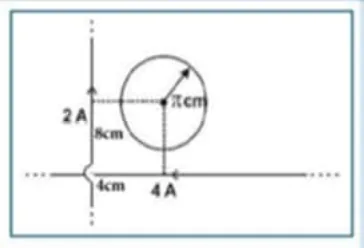
أظهر الإجابة
السلك الأول (بُعد $\mathrm{4\,cm}$): $B_1=\dfrac{2\times10^{-7}\times2}{0.04}=10^{-5}\,\mathrm{T}$ داخل الصفحة السلك الثاني (بُعد $\mathrm{8\,cm}$): $B_2=\dfrac{2\times10^{-7}\times4}{0.08}=10^{-5}\,\mathrm{T}$ داخل الصفحة المطلوب $10^{-5}$ نحو الناظر ⇐ مجال الحلقة $=3\times10^{-5}\,\mathrm{T}$ نحو الناظر $\dfrac{4\pi\times10^{-7}I}{2\times\pi\times10^{-2}}=3\times10^{-5}$ ⇐ $I=1.5\,\mathrm{A}$ عكس عقارب الساعة
42022 د2 صناعي
سلك موصل طوله $(50\pi\,\mathrm{cm)}$ شُكّل بحيث يصنع منه ملف دائري نصف قطره $(R)$ وعدد لفاته $(N)$، مُرر به تيار شدته $\mathrm{(5\,A)}$ فتولد في مركزه مجال مغناطيسي شدته $(2\pi\times10^{-3}\,\mathrm{T)}$. احسب: (1) نصف قطر الملف $(R)$ (2) عدد لفاته $(N)$
أظهر الإجابة
$NR=\dfrac{0.5\pi}{2\pi}=0.25$، و $\dfrac NR=\dfrac{2B}{\mu_0I}=\dfrac{4\pi\times10^{-3}}{2\pi\times10^{-6}}=2000$ $N^2=500$ ⇐ $N\approx22.4$ لفة، $R\approx1.1\,\mathrm{cm}$ ملاحظة: قيم مفتاح الإجابة $(R=2\times10^{-3}\,\mathrm{m},\ N=12.5\times10^3)$ لا تحقق المعطيات؛ طريقة الحل هي نفسها كالسؤال الأول.
52022 د2 صناعي
يمثل الشكل المجاور، ملفان دائريان متحدان في المركز، يتكون كل منهما من لفة واحدة ويسري بهما نفس قيمة التيار الكهربائي بنفس الاتجاه. أثبت أن شدة المجال المغناطيسي في مركز الملفين تعطى بالعلاقة: $B=\dfrac{\mu I(R_1+R_2)}{2R_1R_2}$
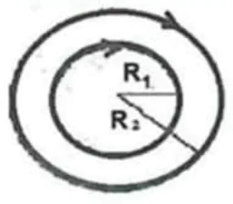
أظهر الإجابة
التياران بنفس الاتجاه فيتجمع المجالان: $B=\dfrac{\mu I}{2R_1}+\dfrac{\mu I}{2R_2}=\dfrac{\mu I(R_2+R_1)}{2R_1R_2}$
62021 د1 صناعي
سلكان مستقيمان لا نهائيان يحمل الأول تيار كهربائي شدته $\mathrm{4\,A}$ باتجاه السينات الموجب في حين يحمل الثاني تيار شدته $\mathrm{2\,A}$ باتجاه الصادات السالب كما في الشكل المجاور، جد مقدار واتجاه شدة المجال المغناطيسي عند النقطة $(a)$.
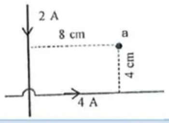
أظهر الإجابة
السلك الرأسي (بُعد $\mathrm{8\,cm}$): $B_1=\dfrac{2\times10^{-7}\times2}{0.08}=0.5\times10^{-5}\,\mathrm{T}$ باتجاه $+z$ السلك الأفقي (بُعد $\mathrm{4\,cm}$): $B_2=\dfrac{2\times10^{-7}\times4}{0.04}=2\times10^{-5}\,\mathrm{T}$ باتجاه $+z$ $B=2.5\times10^{-5}\,\mathrm{T}\ (+z)$
72021 د2 صناعي
يبين الشكل المجاور سلكاً يسري فيه تيار شدته $\mathrm{2\,A}$، جد شدة المجال المغناطيسي عند النقطة $C$.
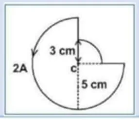
أظهر الإجابة
الأجزاء المستقيمة تمر بـ $C$ فمجالها صفر. ثلاثة أرباع دائرة نصف قطرها $\mathrm{5\,cm}$: $B_1=\dfrac34\cdot\dfrac{\mu_0I}{2r}=\dfrac34\cdot\dfrac{4\pi\times10^{-7}\times2}{0.1}\approx1.88\times10^{-5}$ ربع دائرة نصف قطرها $\mathrm{3\,cm}$: $B_2=\dfrac14\cdot\dfrac{4\pi\times10^{-7}\times2}{0.06}\approx1.05\times10^{-5}$ $B\approx2.93\times10^{-5}\,\mathrm{T}\ (+z)$
82021 د2 صناعي
سلكان مستقيمان طويلان جداً ومتوازيان وضعا بشكلٍ عمودي على مستوى الصفحة، وعلى بعد $\mathrm{(10\,cm)}$ من بعضهما، فإذا مر بهما تياران متعاكسان $(I_1=2A,\ I_2=5A)$، أجب عما يلي: (1) ما شدة المجال المغناطيسي الناشئ عنهما عند منتصف المسافة بينهما (2) حدد موقع نقطة التعادل.
أظهر الإجابة
(1) التياران متعاكسان فيتجمع المجالان: $B=\dfrac{2\times10^{-7}(2+5)}{0.05}=2.8\times10^{-5}\,\mathrm{T}$ (2) نقطة التعادل خارج السلكين بجانب الأصغر تياراً: $\dfrac{2}{x}=\dfrac{5}{x+0.1}$ ⇐ $x\approx6.67\,\mathrm{cm}$ من $I_1$ (أي $\mathrm{16.67\,cm}$ من $I_2$)
92017 د2
مستخدماً قانون بيو–سافار اشتق العلاقة التي تبين قيمة المجال المغناطيسي في مركز ملف دائري عدد لفاته $(N)$ لفة ونصف قطره $(R)$ عندما يسري فيه تيار شدته $(I)$
أظهر الإجابة
$B=\dfrac{\mu_0}{4\pi}\Sigma\dfrac{I\Delta L\sin\theta}{R^2}$، وكل عنصر عمودي على $R$ $(\theta=90^\circ)$ وكلها على نفس البعد: $B=\dfrac{\mu_0}{4\pi}\cdot\dfrac{I(2\pi R)}{R^2}=\dfrac{\mu_0I}{2R}$ للفة الواحدة، ولـ $N$ لفة: $B=\dfrac{\mu_0NI}{2R}$
102019 د2
باستخدام قانون بيو وسافار أثبت أن شدة المجال المغناطيسي عند مركز ملف دائري يمر به تيار كهربائي $(I)$ وعدد لفاته $(N)$ تعطى بالعلاقة: $B=\dfrac{\mu NI}{2R}$
أظهر الإجابة
كما في السؤال السابق: $\Sigma\Delta L=2\pi R$ و $\sin90^\circ=1$ ⇐ $B=\dfrac{\mu_0I}{2R}$ للفة، ثم نضرب في $N$.
112020 د2
يبين الشكل المجاور سلكين مستقيمين لا نهائيين، يحمل الأول تياراً كهربائياً شدته $\mathrm{(3\,A)}$ نحو محور الصادات الموجب، والثاني $\mathrm{(6\,A)}$ نحو محور السينات السالب، وضعت حلقة دائرية في مستوى السلكين نصف قطرها $(\pi\,\mathrm{cm)}$ ويقع مركزها في النقطة $(6\,\mathrm{cm},12\,\mathrm{cm)}$، أوجد مقدار واتجاه شدة التيار المار بالحلقة لتصبح شدة المجال المغناطيسي في مركز الملف $\mathrm{(10^{-5}\,T)}$ باتجاه الناظر.
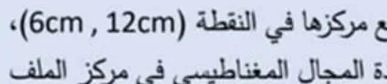
أظهر الإجابة
$B_1=\dfrac{2\times10^{-7}\times3}{0.06}=10^{-5}$ داخل الصفحة، $B_2=\dfrac{2\times10^{-7}\times6}{0.12}=10^{-5}$ داخل الصفحة مجال الحلقة المطلوب $3\times10^{-5}\,\mathrm{T}$ نحو الناظر ⇐ $I=\dfrac{3\times10^{-5}\times2\pi\times10^{-2}}{4\pi\times10^{-7}}=1.5\,\mathrm{A}$ عكس عقارب الساعة
122023 د1
ملف حلزوني يسري به تيار كهربائي شدته $\mathrm{(5\,A)}$، أثر عليه مجال مغناطيسي منتظم خارجي شدته $(2\times10^{-5}\,\mathrm{T)}$ نحو $(+X)$، فكانت محصلة المجال المغناطيسي عند النقطة $(a)$ التي تقع على محور الملف الحلزوني $(3\times10^{-5}\,\mathrm{T)}$ نحو $(-X)$، أجب عما يأتي: (1) اتجاه التيار الكهربائي في المقاومة $(R)$ (2) عدد لفات الملف الحلزوني لكل وحدة طول.
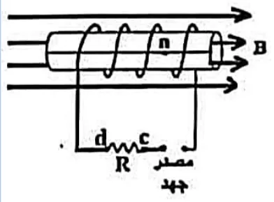
أظهر الإجابة
مجال الملف $=3\times10^{-5}+2\times10^{-5}=5\times10^{-5}\,\mathrm{T}$ نحو $(-X)$ (1) حسب قاعدة اليد اليمنى يكون التيار في المقاومة من $c$ إلى $d$ (2) $n=\dfrac{B}{\mu_0I}=\dfrac{5\times10^{-5}}{4\pi\times10^{-7}\times5}\approx8$ لفة/م
132023 د2
في الشكل أدناه، احسب مقدار واتجاه شدة المجال المغناطيسي في النقطة $(c)$.
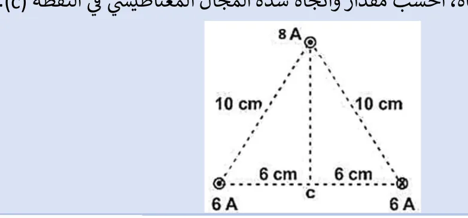
أظهر الإجابة
السلكان السفليان $\mathrm{(6\,A)}$ تياراهما متعاكسان وعلى بعد $\mathrm{6\,cm}$: كل منهما $\dfrac{2\times10^{-7}\times6}{0.06}=2\times10^{-5}$ وبنفس الاتجاه (رأسي) ⇐ $4\times10^{-5}\,\mathrm{T}$ السلك العلوي $\mathrm{(8\,A)}$ على بعد $\mathrm{8\,cm}$: $\dfrac{2\times10^{-7}\times8}{0.08}=2\times10^{-5}\,\mathrm{T}$ (أفقي) $B=\sqrt{4^2+2^2}\times10^{-5}\approx4.47\times10^{-5}\,\mathrm{T}$، $\tan\alpha=\dfrac42$ ⇐ $\alpha\approx63.4^\circ$ مع الأفقي
142023 استكمالية
ملف حلزوني طوله $(L)$ وعدد لفاته $(4)$ لفات، وشدة التيار المار فيه $(I)$، وضع فوقه سلك مستقيم، موازٍ لمحوره، ويمر فيه تيار شدته $(6\pi I)$ نحو الغرب كما في الشكل المجاور، أثبت أنّ شدة المجال المغناطيسي عند النقطة $(a)$ الواقعة على محور الملف الحلزوني تعطى بالعلاقة الآتية: $B_{كلي}=\dfrac{5\mu I}{L}$
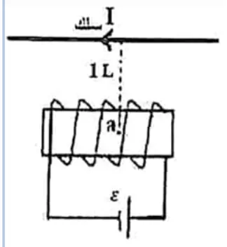
أظهر الإجابة
مجال الملف (على محوره): $B_1=\dfrac{\mu(4)I}{L}=\dfrac{4\mu I}{L}$ مجال السلك (بُعده $L$): $B_2=\dfrac{\mu(6\pi I)}{2\pi L}=\dfrac{3\mu I}{L}$ وهو عمودي على محور الملف $B=\sqrt{B_1^2+B_2^2}=\dfrac{\mu I}{L}\sqrt{16+9}=\dfrac{5\mu I}{L}$
152024 د1
سلكان مستقيمان ولانهائيا الطول، موضوعان بشكل عمودي على الصفحة، ويمر بهما تياران كهربائيان كما في الشكل المجاور، وضعت حلقة دائرية نصف قطرها $(\pi\,\mathrm{cm)}$، بحيث يبعد مركز الحلقة $\mathrm{(10\,cm)}$ عن كلا السلكين، احسب شدة المجال المغناطيسي عند مركز الحلقة.
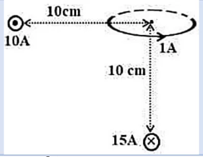
أظهر الإجابة
مجال السلك $\mathrm{10A}$: $2\times10^{-5}\,\mathrm{T}$، مجال السلك $\mathrm{15A}$: $3\times10^{-5}\,\mathrm{T}$، مجال الحلقة $\mathrm{(1A)}$: $\dfrac{4\pi\times10^{-7}}{2\pi\times10^{-2}}=2\times10^{-5}\,\mathrm{T}$ بجمع المتجهات حسب اتجاهاتها في الشكل: $B=5\times10^{-5}\,\mathrm{T}$ بزاوية $53^\circ$
162024 استكمالية
يبين الشكل المجاور سلكين مستقيمين لا نهائيين، يحمل الأول تياراً كهربائياً شدته $\mathrm{(2\,A)}$ نحو محور الصادات الموجب، والثاني $\mathrm{(4\,A)}$ نحو محور السينات السالب، وضعت حلقة دائرية في مستوى السلكين نصف قطرها $(\pi\,\mathrm{cm)}$، ويقع مركزها في النقطة $(4\,\mathrm{cm},8\,\mathrm{cm)}$، أوجد مقدار واتجاه شدة التيار الكهربائي المار بالحلقة لتصبح شدة المجال المغناطيسي في مركز الحلقة $\mathrm{(10^{-5}\,T)}$ باتجاه $(+Z)$.
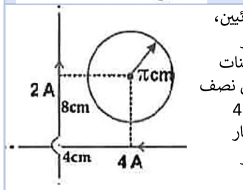
أظهر الإجابة
$B_1=\dfrac{2\times10^{-7}\times2}{0.04}=10^{-5}\,(-Z)$، $B_2=\dfrac{2\times10^{-7}\times4}{0.08}=10^{-5}\,(-Z)$ مجال الحلقة $=3\times10^{-5}\,\mathrm{T}\ (+Z)$ ⇐ $I_3=1.5\,\mathrm{A}$ بعكس اتجاه عقارب الساعة
172025 د1
يبين الشكل المجاور سلكين مستقيمين لا نهائيين، يحمل الأول تياراً كهربائياً شدّته $\mathrm{(2\,A)}$ نحو محور الصادات الموجب، والثاني $\mathrm{(8\,A)}$ نحو محور السينات الموجب، وضعت حلقة دائرية في مستوى السلكين نصف قطرها $(\pi\,\mathrm{cm)}$، ويقع مركزها في النقطة $(4\,\mathrm{cm},8\,\mathrm{cm)}$ أوجد مقدار واتجاه شدّة التيار المار بالحلقة لتصبح شدة المجال المغناطيسي في مركز الحلقة $\mathrm{(10^{-5}\,T)}$ بعيداً عن الناظر.
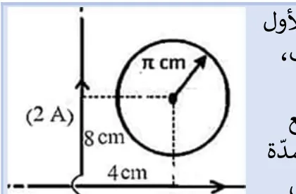
أظهر الإجابة
$B_1=\dfrac{2\times10^{-7}\times2}{0.04}=10^{-5}\,\mathrm{T}$ بعيداً عن الناظر $B_2=\dfrac{2\times10^{-7}\times8}{0.08}=2\times10^{-5}\,\mathrm{T}$ نحو الناظر المحصلة $10^{-5}$ نحو الناظر، والمطلوب $10^{-5}$ بعيداً ⇐ مجال الحلقة $2\times10^{-5}\,\mathrm{T}$ بعيداً عن الناظر $I_3=\dfrac{2\times10^{-5}\times2\pi\times10^{-2}}{4\pi\times10^{-7}}=1\,\mathrm{A}$ مع اتجاه عقارب الساعة
182025 د2
يمثل الشكل المجاور سلكاً يسري فيه تيار كهربائي شدته $\mathrm{(2\,A)}$ في الاتجاه المبين، جد شدة المجال المغناطيسي عند النقطة $(C)$ المبينة في الشكل مقداراً واتجاهاً؟
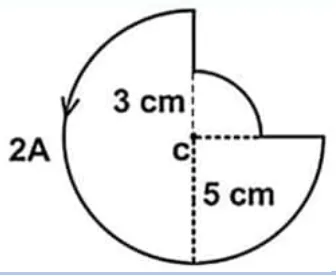
أظهر الإجابة
الأجزاء المستقيمة تمر بـ $C$ فمجالها صفر. $\frac34$ دائرة $(r=5\,\mathrm{cm)}$: $\dfrac34\cdot\dfrac{4\pi\times10^{-7}\times2}{0.1}\approx1.88\times10^{-5}$ $\frac14$ دائرة $(r=3\,\mathrm{cm)}$: $\dfrac14\cdot\dfrac{4\pi\times10^{-7}\times2}{0.06}\approx1.05\times10^{-5}$ $B\approx2.93\times10^{-5}\,\mathrm{T}\ (+Z)$